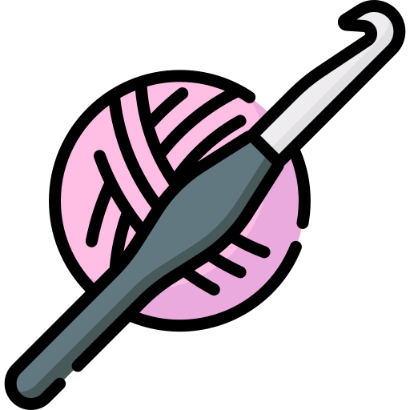
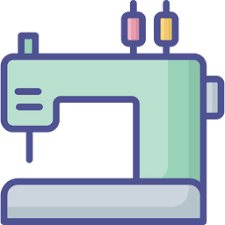
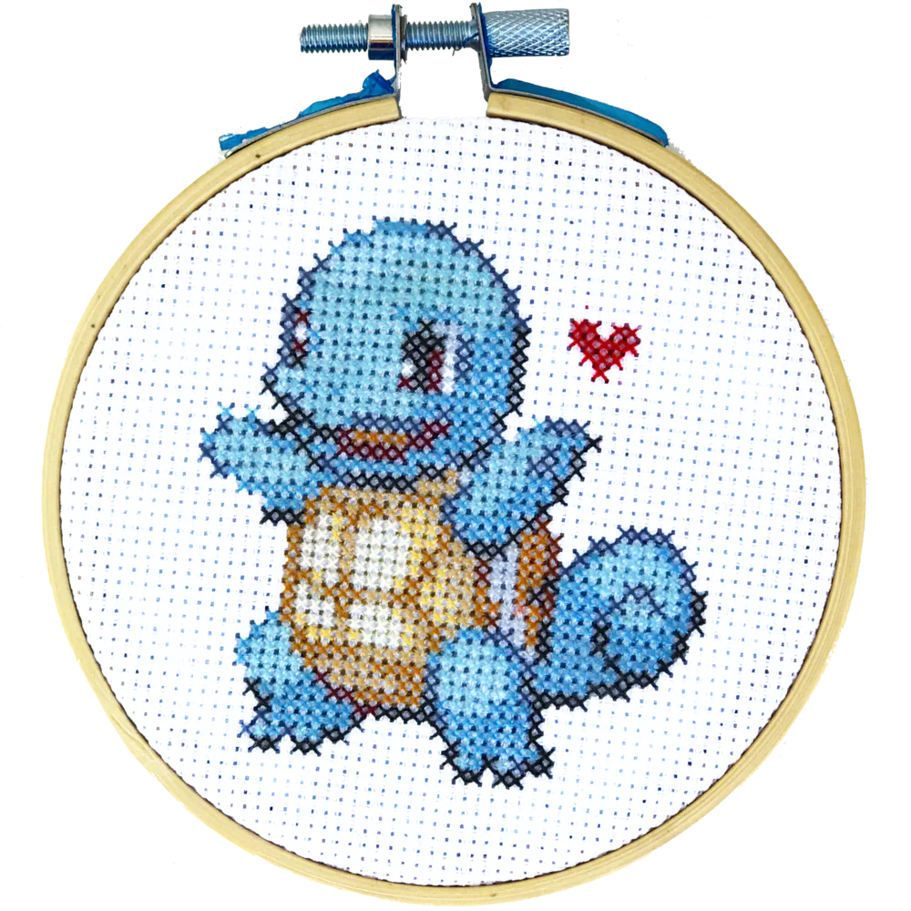
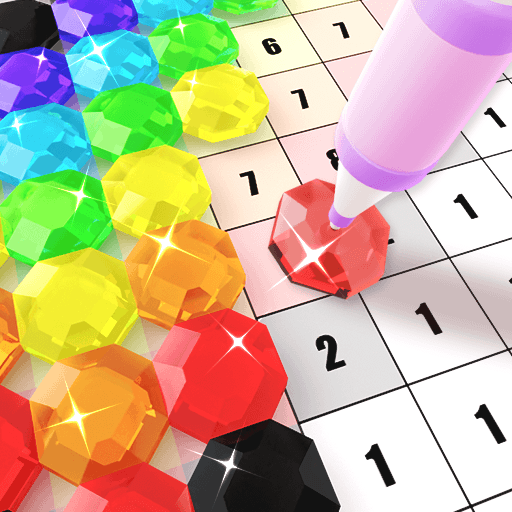

I love to do many things in my free time! Walking, going to the park, wine/ beer tasting, kayaking, dancing, video games, tabletop gaming, puzzles etc...
But my favorite hobby to do in my spare time is...
Seriously, I love just about any craft and involves creating something tangible for all to see! It's a rewarding process, it helps me to relax, and it also helps me make gifts for others as well! For me, my crafting hobbies includes (but not limited to):
| Crochet | Sewing | Cross Stitching | Painting | Diamond Painting |
|---|---|---|---|---|
|  |  |  |
|
 |
| (Not to be confused with knitting please!) | I primarily make teddy bears | My real starter was a Charmander though 🔥 | Definitely not a professional but fun nonetheless | I love anything that sparkles |
The above images are not reflections of my actual work. Please click on any available links to view my work 😊